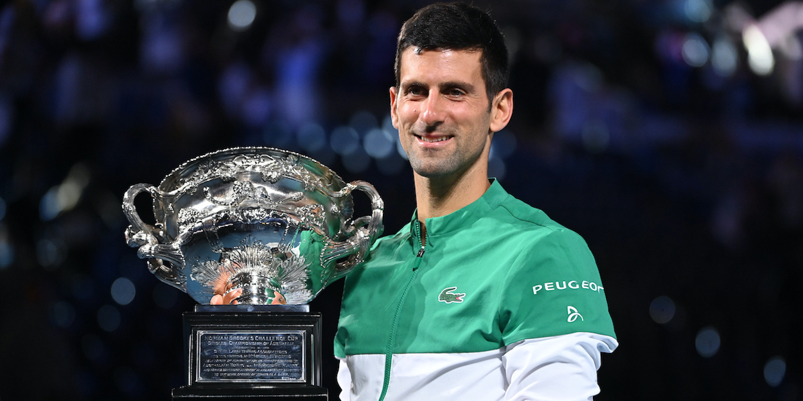
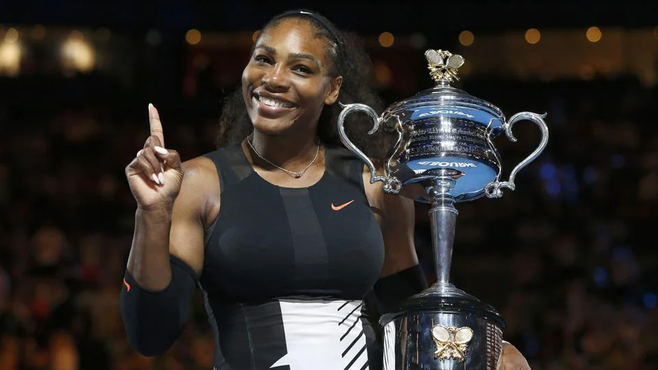

Also Nicknamed as the "Happy Slam" throughout the years, the Australian Open is the first grand slam of the season. Usually, it is held in the last fortngiht of January.
Since 1905, the Australian Open has been staged in five different cities: Melbourne (62 times), Sydney (17 times), Adelaide (14 times), Brisbane (8 times), Perth (three times), as well as in New Zealand (two times)
The tournament was not held between 1916 and 1918, or 1940 and 1945, due to international conflicts happening at the time.
TA and the Australian Open moved to its new, permanent home at Flinders Park (now Melbourne Park) in 1988
Most titles:
Men's tennis: Novak Djokovic

Women's tennis: Serena Williams

Here you can have a list of some memorable matches in the Australian Open :